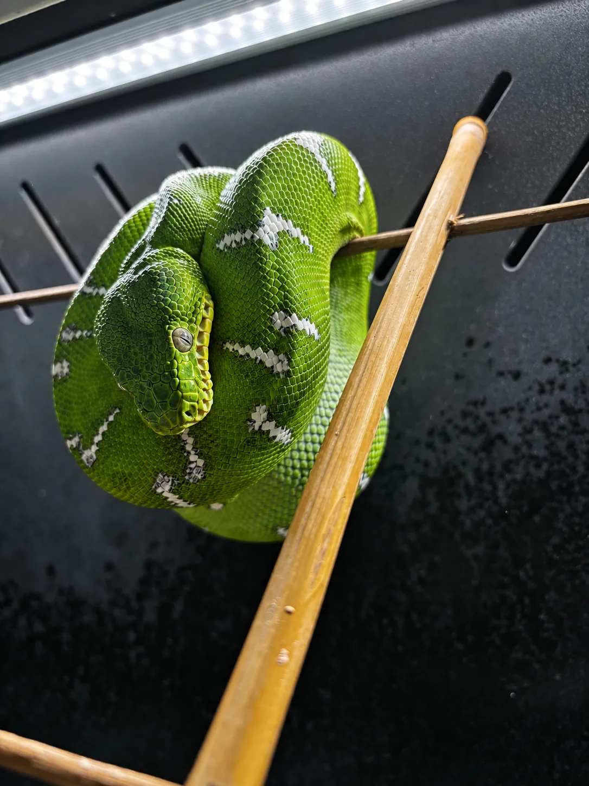
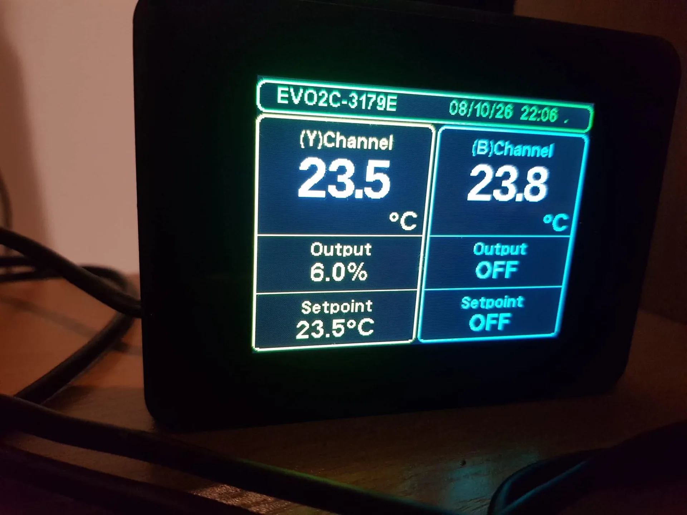
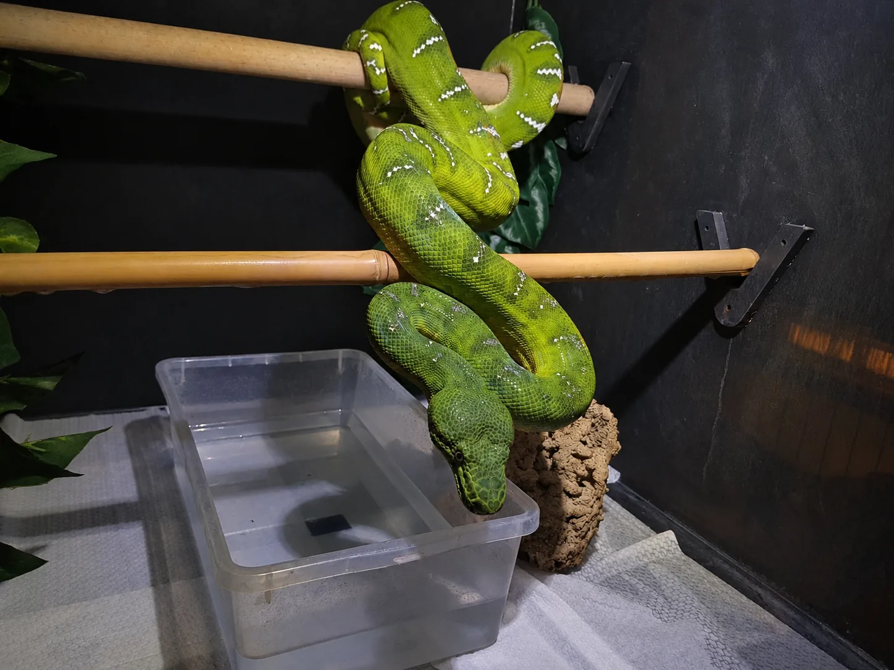

ZASADA DZIENNIKA
Ten cykl będzie prowadzony chronologicznie. FAKT oznacza zmianę lub zdarzenie już wykonane i zapisane. OBSERWACJA opisuje to, co rzeczywiście zauważono. PLAN jest następnym krokiem, a nie informacją o tym, że już nastąpił. WNIOSEK pozostaje interpretacją roboczą, którą można skorygować wraz z kolejnymi danymi.
Dobrostan zwierzęcia jest ważniejszy niż kalendarz sezonu, a sezon ważniejszy niż oczekiwanie wyniku rozrodczego.
Nie ma tu deklaracji, że obecne działania „uruchomią” rozród. U Corallus caninus reakcja zależy od zdrowia, kondycji, wieku, historii osobnika i całego środowiska. Ten wpis dokumentuje pierwszą fazę przygotowań; następne części powstaną wyłącznie po zebraniu rzeczywistych obserwacji.
PROJEKT 2026/2027
Trzy osobniki, dwa różne statusy
Klara
Samica, około 5 lat, około 150 cm, około 1850 g.
FaktOsobnik w aktualnym projekcie sezonowym.
Max
Samiec, około 6 lat, około 150 cm, około 1800 g.
FaktOsobnik w aktualnym projekcie sezonowym.
Arnold
Samiec, około 4,5 roku, około 140 cm, około 1450–1500 g.
PlanPrzewidywany jako samiec do przyszłego projektu; nie jest opisany jako bieżący partner.
Długości i masy są wartościami orientacyjnymi z dokumentacji hodowlanej. Nie przypisujemy na zdjęciach imienia konkretnemu osobnikowi: sylwetki są podobne, a fotografie mają dokumentować warunki i zachowanie, nie identyfikację.
FAKTY Z DOKUMENTACJI
Od późnego lata do 9 października
Zmiany nie zostały wykonane jednego dnia. Skracanie fotoperiodu i nocne obniżenie temperatury wprowadzane są etapowo, przy zachowaniu stabilnego dnia oraz stałej kontroli zwierząt.
- Warunki letnie
FAKT: nie prowadzono jeszcze właściwego chłodzenia sezonowego. Światło pracowało mniej więcej do 20:00.
- Pierwszy potwierdzony krok
FAKT: światło 08:00–19:30, czyli 11 h 30 min; dzień 28,5–29°C; noc 24–24,5°C; wieczorne zraszanie około 1,0 B.
- Kolejne skrócenie światła
FAKT: światło 08:00–19:15, czyli 11 h 15 min; dzień 28,5–29°C.
- Obniżenie nocy
FAKT: światło 08:00–19:00, czyli 11 h; noc obniżona do 23,5°C; dzień 28,5–29°C.
- Ostatni potwierdzony stan
FAKT: światło 08:00–19:00, czyli 11 h; dzień 28,5–29°C; noc 23,5°C; wieczorne zraszanie około 1,0 B. Karmienie jest wstrzymane.

Dzienne pozycje spoczynkowe na żerdzi. Zdjęcie przedstawia jednego z dorosłych Corallus caninus w hodowli Gonzo Exotics; nie służy do oznaczania konkretnego osobnika.
ZAPIS Z AUTOMATYKI
Noc nie jest tylko ustawieniem w tabeli
FAKT: fotografia termostatu z 08.10.2026, godz. 22:06, pokazuje odczyt kanału Y 23,5°C przy setpoincie 23,5°C oraz kanału B 23,8°C. Jest to zapis z urządzenia, nie dowód temperatury w każdym punkcie terrarium ani temperatury ciała zwierzęcia — znaczenie odczytu zależy od lokalizacji sond i konstrukcji systemu.


WNIOSEK ROBOCZY
Zmiana rytmu, nie „mocny bodziec”
Najbardziej prawdopodobna funkcja dotychczasowych korekt to stopniowe wyjście z rytmu letniego: krótsza ekspozycja na światło, chłodniejsza noc i zachowanie wieczornego cyklu wody. Nie traktuję pojedynczej liczby jako celu samodzielnego. Dzień, noc, zraszanie, wentylacja, tempo przesychania, kondycja oraz zachowanie zwierząt tworzą jeden system.
Brak pogorszenia dobrostanu jest warunkiem dalszych zmian.
Fotoperiod i noc obniżane są etapami, aby można było ocenić reakcję.
Zmiana pozycji, apetytu lub aktywności może mieć wiele przyczyn.
To nie jest uniwersalny protokół dla każdego C. caninus. Szczególnie nie przenosimy automatycznie doświadczeń dotyczących Corallus batesii (Amazon Basin) na Northern Corallus caninus. Różnica gatunkowa i różnice między instalacjami są ważniejsze niż pozorna precyzja tabeli.
PLAN • JESZCZE NIEWYKONANY
Najbliższy krok po 9 października
Światło do 18:45
Planowany fotoperiod: 08:00–18:45, czyli 10 h 45 min. Dzień: 28–28,5°C. Noc: około 23–23,5°C.
Granica zapisu: ten punkt nie jest potwierdzonym stanem bieżącym. Zostanie przeniesiony do chronologii dopiero po realnym wykonaniu i obserwacji skutków.
CO BĘDZIE ZAPISYWANE DALEJ
Nie tylko temperatura i godzina
W kolejnych wpisach będą rozdzielane zwykłe notatki od zdarzeń istotnych dla sezonu. Brak nowych objawów lub brak zmian także jest wartościową informacją — nie będzie uzupełniany domysłami.
Wstrzymanie karmienia i zmiany środowiskowe dotyczą wyłącznie aktualnego projektu, prowadzonego na podstawie kondycji konkretnych zwierząt. Nietypowe objawy, pogorszenie stanu ogólnego lub problemy z oddychaniem wymagają oceny lekarza weterynarii zajmującego się gadami, a nie kontynuowania planu „dla kalendarza”.
PRAKTYKA I ŹRÓDŁA
Co wynika z porównania opisów hodowlanych
FAKT ZE ŹRÓDEŁ: publikowane zalecenia dla szmaragdowych boa różnią się szczegółami, a część starszych materiałów powstała przed ponownym rozdzieleniem C. caninus i C. batesii. Dlatego liczby oraz opis rozrodu z pojedynczej hodowli nie mogą automatycznie stać się receptą dla wszystkich zwierząt.
WSPÓLNY MIANOWNIK
- Hodowcy opisują sezonowość jako sekwencję zmian, nie pojedyncze przełączenie.
- Wentylacja, dostęp do wody i higiena są oceniane razem z wilgotnością.
- Dobrostan oraz kondycja dorosłych osobników poprzedzają decyzje rozrodcze.
- Takson i pochodzenie materiału źródłowego trzeba sprawdzać przed przeniesieniem wniosku.
WNIOSEK DLA TEGO DZIENNIKA: harmonogram Gonzo Exotics jest własnym, ostrożnym programem obserwacyjnym. Ma być przejrzysty i możliwy do ocenienia po czasie, ale nie jest instrukcją do skopiowania bez znajomości własnych zwierząt i warunków.
PODSUMOWANIE WPISU #1
Jesteśmy na początku sezonu, nie na końcu historii.
Potwierdzony zapis obejmuje przejście od warunków letnich do 11-godzinnego fotoperiodu i nocnego celu 23,5°C, przy wieczornym zraszaniu oraz wstrzymaniu karmienia. Kolejny opisze wyłącznie to, co wydarzy się po 9 października.
POZNAJ E-BOOK O CORALLUS CANINUS — 171 STRON, 30 ROZDZIAŁÓW →ŹRÓDŁA I METODA
Jak czytać kontekst tego wpisu
Chronologia, dane o zwierzętach, parametry i fotografie pochodzą z dokumentacji Gonzo Exotics. Poniższe źródła służą jedynie do ostrożnego kontekstu biologicznego i hodowlanego; nie zastępują obserwacji konkretnego zwierzęcia.
- Joseph M. Polanco, „Emerald Gems (Corallus caninus): Captive Husbandry and Propagation Part I”, Iguana, 2006 — opis husbandry i jego historyczny kontekst.
- Joseph M. Polanco, „Emerald Gems … Part III: Propagation”, Iguana, 2006 — publikacja o rozrodzie, czytana z uwzględnieniem późniejszych zmian taksonomicznych.
- Jörg Riethausen, Haltung — praktyka hodowlana oraz przypomnienie, że w tropikach występują także okresy suchsze.
- ReptiFiles, Northern Emerald Tree Boa Care Sheet — współczesny materiał pomocniczy dla Corallus caninus.
- Henderson, Passos & Feitosa (2009), Geographic Variation in the Emerald Treeboa — podstawa rozdzielenia C. caninus i C. batesii.
Dokumentacja hodowlana i fotografie: Gonzo Exotics • weryfikacja źródeł: 10.10.2026